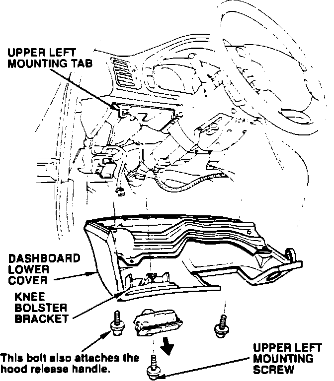
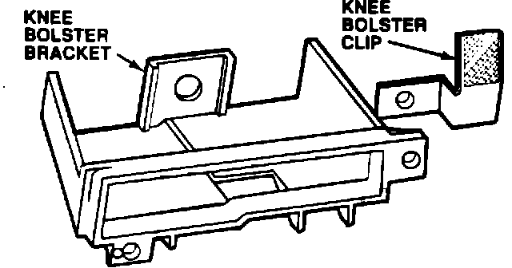

Lower Dashboard Cover - Loose Fit/Gap
91acura03
YEAR MODEL VIN APPLICATION
1991 LEGEND See VEHICLES
AFFECTED
May 20, 1991
BULLETIN NO. 91-029
Gap Between Dashboard and Lower Dashboard Cover
PROBLEM
The lower dashboard cover does not fit snugly against the dashboard, leaving a gap.
VEHICLES AFFECTED
Sedan: through VIN JH4KA7 ... MC017237
Coupe: through VIN JH4KA8 ... MC000784

CORRECTIVE ACTION
Install the clip listed under PARTS INFORMATION to hold the lower cover against the dashboard.
1. Remove the courtesy light controller (LS) or the plastic cover (STD, L) from the lower dashboard cover.
NOTE: If the courtesy light controller cannot be removed easily, use the procedure, but not the warranty information from Service Bulletin 91-028, "Lower Dashboard Cover/Courtesy Light Controller Replacement."
2. Remove the three lower dashboard cover mounting screws, then remove the cover.

3. Install the knee bolster clip under the right knee bolster bracket mounting screw.
4. Make sure the ignition switch grommet is positioned correctly, then insert the lower dashboard cover's upper right mounting clip into the slot in the dashboard.
5. Install all three cover screws finger-tight. While pushing the cover up and forward, tighten the upper left screw first, followed by the lower left screw, then the lower right screw.
6. Reinstall the courtesy light controller (LS) or the plastic cover (STD, L). On LS models, turn on the headlights and make sure the courtesy light controller works properly.
PARTS INFORMATION
Knee bolster clip: P/N 77217-SP0-A00
Knee bolster bracket
(if necessary): P/N 77216-SP0-A00
WARRANTY CLAIM INFORMATION
In warranty: The normal warranty applies. Out-of-warranty: Any repair performed after warranty expiration may be eligible for goodwill consideration by the District Service Manager. You must request consideration, and get the DSM's decision, before starting work.
Operation number: 841112
Flat rate time: 0.3 hour (includes knee bolster
bracket replacement,
if necessary.)
Failed P/N: 77892-SP0-A03
Defect code: 074
Contention code: A01